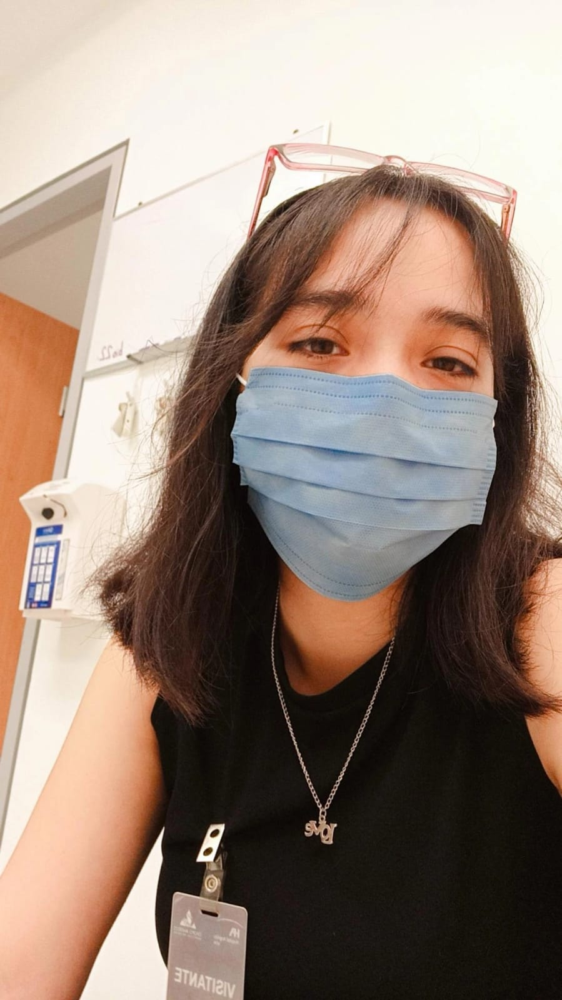

<!DOCTYPE html>
<html lang="es"><!--este es para que este en español la pagina y no detecte traducciones-->
<head>
    <meta charset="UTF-8">
    <meta name="viewport" content="width=device-width, initial-scale=1.0">
<!--Con bootstrap-->
    <link 
     href="https://cdn.jsdelivr.net/npm/bootstrap@5.3.3/dist/css/bootstrap.min.css" 
     rel="stylesheet" 
     integrity="sha384-QWTKZyjpPEjISv5WaRU90FeRpok6YctnYmDr5pNlyT2bRjXh0JMhjY6hW+ALEwIH" 
     crossorigin="anonymous"/>
<!--este link CDNde bootstrap es para poder revisar el icono de bootstrap-->
    <link rel="stylesheet" href="https:cdn.jsdelivr.net/npm/bootstrap-icons@1.11.3/font/bootstrap-icons.min.css">
<!--este es para colocar el icono de la pestaña osea el favicon, se tiene q tener la imagen del icono o tener descargado el svg-->
    <link rel="shortcut icon" href="assets/code.svg" type="image/x-icon">
    
<title>Perla Xiomara San Juan Meza>/title>
</head>
<body>

   <header
      class="d-flex flex-wrap justify-content-center py-3 mb-4 border-bottom">
      <a
       href="/"
       class="d-flex align-items-center mb-3 mb-md-auto link-body-emphasis text-decoration-none">
<!--este svg es para el icoo que se tenia <svg class="bi me-2" width="40" height="32"><use xlink:href=#bootstrap"></use></svg>-->
       <i class="bi bi-code p-3"></i>       <!--este es la etiqueta de bootstrape para nuestro icono el p-3 es el padding-->
       <span class="fs-4">Perla Xiomara San Juan Meza</span>
      </a>
      
       <ul class="nav nav-pills">
       <li class="nav-item">
        <a href="#" class"nav-link active" aria-current="page>Perfil</a>
       </li>
       <li class="nav-item"><a href="#" class="nav-item"><a href="#" class="nav-link">Habilidades</a></li>
       <li class="nav-item"><a href="#" class="nav-item"><a href="#" class="nav-link">Proyectos</a></li>
       <li class="nav-item"><a href="#" class="nav-item"><a href="#" class="nav-link">Testimonios</a></li>
       <li class="nav-item"><a href="#" class="nav-item"><a href="#" class="nav-link">contactos</a></li>
      </ul
   </header>
  <main>
  <!--hero-->
    <div class="hero">
     <div class="px-4 py-5 my-5 text-center"">
      
      <h1 class="display-5 fw-bold text-body-emphasis">Perla Xiomara San Juan Meza</h1>
  <!--JavaScript manjea id, es pa el Texto Typewriter-->
       <h2 id="app"></h2>  
      <div class="col-lg-6 mx-auto">
        <p class="lead mb-4">Desarrolladora frontend Jr. apasionada por la lectura y el poder contruibuir a la presencia de las mujeres en carreras STEM, mis mayores fortalezas son mi capacidad de resolucion y mi proceso autodidacta. </p>
         <div class="d-grid gap-2 d-sm-flex justify-content-sm-center">
          <button type="button" class="btn btn-primary btn-lg px-4 gap-3">Primary button</button>
         </div>
      </div>
     </div>
    </div>
  
  <!--Habilidades-->
    <div class="habilidades container px-4 py-5" id="hanging-icons">
     <h2 class="pb-2 border-bottom">Skills</h2>
     <div class="row g-4 py-5 row-cols-1 row-cols-lg-3">
      <div class="col d-flex align-items-start">
        <div class="icon-square text-body-emphasis bg-body-secondary d-inline-flex align-items-center justify-content-center fs-1 flex-shrink-0 me-3">
          <i class="bi bi-cpu px-1"></i><!--es el icono que se elija desde bootstrap(font icon) y se le pone pading de 1-->
        </div>
        <div>
          <h3 class="fs-2 text-body-emphasis">Desarrollo Frontend</h3>
          <p>He creado sitios web responsivos aplicando los conocimientos obtenidos durante el bootcamp de Technologchicas PRO</p>
    
        </div>
      </div>
      <div class="col d-flex align-items-start">
        <div class="icon-square text-body-emphasis bg-body-secondary d-inline-flex align-items-center justify-content-center fs-1 flex-shrink-0 me-3">
          <i class="bi bi-hospital px-1"></i>
        </div>
        <div>
          <h3 class="fs-2 text-body-emphasis"> Equipo Medico</h3>
          <p> He llevado a cabo Mantenimientos Preventivos y Correctivos a Equipamento Medico de diversas áreas siguiendo las especificaciones del fabricante y dentro de la Normativa como: </p>
          <a href="#" class="btn btn-primary">Quirofano</a> <a href="#" class="btn btn-primary">CEYE</a>          <a href="#" class="btn btn-primary">Imagenologia</a>
        </div>
      </div>
      <div class="col d-flex align-items-start">
        <div class="icon-square text-body-emphasis bg-body-secondary d-inline-flex align-items-center justify-content-center fs-1 flex-shrink-0 me-3">
          <i class="bi bi-database-fill px-1"></i>
        </div>
        <div>
          <h3 class="fs-2 text-body-emphasis"> Analisis de datos</h3>
          <p>He realizado informes interactivos y didacticos por medio de Power Bi en conjunto con Excel, asi como gestionado bases de datos en diversas plataformas.</p>
        </div>
      </div>
    </div>
  </div>
 <!--Proyectos-->
  <div class="proyectos container">
        <div class="row row-cols-1 row-cols-sm-2 row-cols-md-3 g-3">
          <div class="col">
            <div class="card shadow-sm">
              <!--imagen-->
              
                <div class="card-body">
                <p class="card-text">Clon de Pinterest</p>
                <div class="d-flex justify-content-between align-items-center">
                  <div class="btn-group">
                    <button type="button" class="btn btn-sm btn-outline-secondary"><a target="_blank" href="https://pinterest-clon-swart.vercel.app/">Ver</a></button>
                    <button type="button" class="btn btn-sm btn-outline-secondary"><a target="_blank" href"https://github.com/MaraMesza/pinterest-clon">Github</a></button>
                  </div>
                </div>
                  
              </div>
            </div>
          </div>
  <!--AQUI SE REPITEN la columnas de la clase COL-->
          
     <div class="col">
            <div class="card shadow-sm">
              <!--imagen-->
              
                <div class="card-body">
                <p class="card-text">This is a wider card .</p>
                <div class="d-flex justify-content-between align-items-center">
                  <div class="btn-group">
                    <button type="button" class="btn btn-sm btn-outline-secondary"><a target="_blank" href="https://primera-pagina-seven.vercel.app/">Ver</a></button>
                    <button type="button" class="btn btn-sm btn-outline-secondary"><a target="_blank" href"https://https://github.com/MaraMesza/Primera_pagina">Github</a></button>
                  </div>
                  
                </div>
              </div>
            </div>
          </div>
  <!--AQUI SE REPITEN la columnas de la clase COL-->
     <div class="col">
            <div class="card shadow-sm">
              
                <div class="card-body">
                <p class="card-text">This is a wider card .</p>
                <div class="d-flex justify-content-between align-items-center">
                  <div class="btn-group">
                    <button type="button" class="btn btn-sm btn-outline-secondary"><a target="_blank" href="">Ver</a></button>
                    <button type="button" class="btn btn-sm btn-outline-secondary"><a target="_blank" href"">Github</a></button>
                  </div>
                  
                </div>
              </div>
            </div>
          </div>

        </div>
      </div>

178  <div class="testimonios">
      <div id="carouselExampleAutoplaying" class="carousel slide" data-bs-ride="carousel">
  <div class="carousel-inner">   
    
    <div class="carousel-item active">
  <div class="d-flex justify content-center"><!--indica que tiene un display flex-->
  <!--card-->
       <div class="card" style="width: 18rem;">
         
         <h5 class="card-title text-center">Anel Montes</h5>
         <h6 class="card-subtitle text-center mb-1 text-body-secondary">Mentora</h6>
        <div class="card-body">
         <p class="card-text">Xiomara muestra un rápido progreso en la adquisición de habilidades técnicas clave y una gran disposición para colaborar en proyectos. Su actitud positiva y su voluntad de aprender constantemente son cualidades valiosas en el campo de la programación. No tengo dudas de que [Nombre de la alumna] seguirá creciendo y haciendo contribuciones significativas como desarrolladora frontend en el futuro..</p>
        </div>
       </div>
  <!--fin de card-->
  </div>
  
    </div>
    
 <div class="carousel-item">
    <div class="d-flex justify content-center">
  <!--Card 2--> 
       <div class="card" style="width: 18rem;">
         
         <h5 class="card-title text-center">Ary Luna</h5>
         <h6 class="card-subtitle text-center mb-1 text-body-secondary">Compañera</h6>
        <div class="card-body">
         <p class="card-text">Tuve la gran oportunidad de compartir con Xiomara en el bootcamp de Technolochicas Pro. Sin duda alguna, demostró ser una excelente desarrolladora front-end, con una notable facilidad de aprendizaje y destacando por sus magníficos diseños. Fue un placer conocerle, y espero seguir de cerca sus futuras creaciones. El futuro que le espera es asombroso.</p>
        </div>
       </div>
    <!--fin card2-->
    </div>
    </div>
    
    <div class="carousel-item">
     <div class="d-flex justify content-center">
      <!--Inicio card3-->
       <div class="card" style="width: 18rem;">
         
         <h5 class="card-title text-center">APGV </h5>
         <h6 class="card-subtitle text-center mb-1 text-body-secondary">Compañera</h6>
        <div class="card-body">
         <p class="card-text">He tenido la oportunidad de ver el trabajo de Xiomara como programadora y realmente me ha impresionado. Sus habilidades técnicas y su capacidad para desarrollar soluciones efectivas son notables. Siempre entrega proyectos bien estructurados y de alta calidad. Es una profesional comprometida y confiable, y sin duda su trabajo habla por sí mismo.</p>
        </div>
       </div>
    <!--fin card3-->
     </div>
    </div>
  </div>
   <button class="carousel-control-prev" type="button" data-bs-target="#carouselExampleAutoplaying" data-bs-slide="prev">
    <span class="carousel-control-prev-icon" aria-hidden="true"></span>
    <span class="visually-hidden">Previous</span>
   </button>
   <button class="carousel-control-next" type="button" data-bs-target="#carouselExampleAutoplaying" data-bs-slide="next">
    <span class="carousel-control-next-icon" aria-hidden="true"></span>
    <span class="visually-hidden">Next</span>
   </button>
  </div>
 </div>
241 <!--CONTACTO-->
    <div class="px-4 py-5 my-5 text-center">
      <i class="d-block mx auto mb-4 fs-6 bi bi-chat-right-text-fill"></i>
244     <h1 class="display-5 fw-bold text-body-emphasis-5">Centered hero</h1>
      <div class="col-lg-6 mx-auto">
        <p class="lead mb-4"> Quickuly esto es un parrafo feo.</p>
        <div class="d-grid gap-2 d-sm-flex justify-content-sm-center">
          <button type="button" class="btn btn-primary btn-lg px-4 gap-3">Primary button</button>
249          <button type="button" class="btn btn-outline btn-lg px-4 gap-3">Secondary button</button>


      
      
  <div class="position-relative p-5 text-center text-muted bg-body border border-dashed rounded-5">
    <svg class="bi mt-5 mb-3" width="48" height="48"><use xlink:href="#check2-circle"></use></svg>
    <h1 class="text-body-emphasis">Placeholder jumbotron</h1>
    <p class="col-lg-6 mx-auto mb-4">
      This faded back jumbotron is useful for placeholder content. It's also a great way to add a bit of context to a page or section when no content is available and to encourage visitors to take a specific action.
    </p>
    <button class="btn btn-primary px-5 mb-5" type="button">
      Call to action
    </button>
  </div>
252</div>


    
  </main>
  
<!--script para que bootstrap funcione-->
   <script src="https://cdn.jsdelivr.net/npm/bootstrap@5.3.3/dist/js/bootstrap.bundle.min.js" integrity="sha384-YvpcrYf0tY31HB60NNkmXc5s9fDVZLESaAA55NDzOxhy8GkcIdslK1eN7N6jIeHz" crossorigin="anonymous"></script>
<!-- CDN de typewriter, typewrite es como una libreria de animacion de Js-->
   <script src="https://unpkg.com/typewriter-effect@latest/dist/core.js"></script>
<!--Main de Java, Js-->
   <script src="main.js"></script>
 </body>
</html>
 
